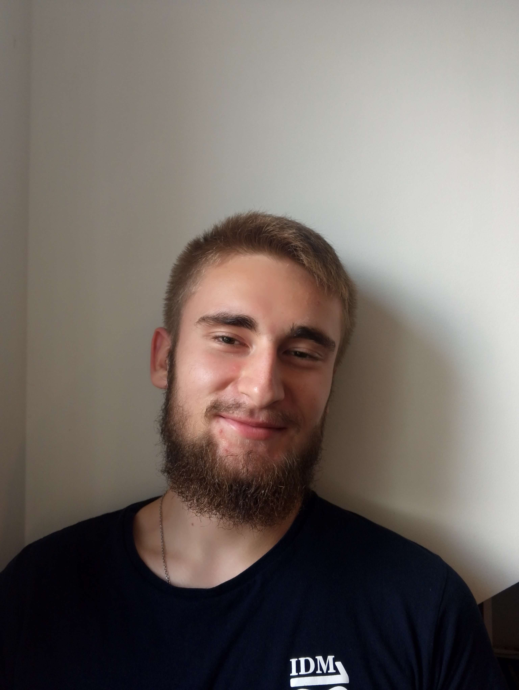

Interesuję się brydżem, cyberbezpieczeństwem oraz niskopoziomowymi aspektami programowania (reverse engineering i pisanie kodu). Lubię też automatyzować codzienność za pomocą skryptów. Olbrzymią przyjemność sprawia mi overclocking sprzętu i konfigurowanie systemu operacyjnego Linux. W wolnych chwilach gram w brydża i inne tego typu gry karciane.
Do moich głównych zadań należą napisanie i przetestowanie kodu na płytkę główną CanSata, zajęcie się komunikacją radiową i stacją bazową w trakcie misji, a także rozplanowanie schematu ich działania. Do 24.11.2025 zajmowałem się reprezentowaniem naszego zespołu jako jego lider.